Course Management
Viewing Your Courses
The Autolab homepage will redirect you to https://autolab.cse.buffalo.edu/courses if you're enrolled in at least one course. From here, you can see current, completed, and upcoming courses that you're involved in. You won't see courses where you're not enrolled as an instructor, teaching assistant (Autolab refers to this as CA: "Course Assistant") or student. You can click on the blue banner or the "Course Page" button to go to the course page. There's also a shortcut button to jump immediately to the gradebook.
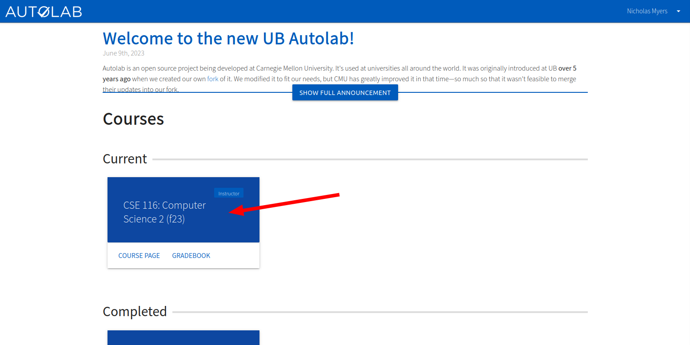
If you're an instructor or CA, you'll see a badge on the top right of the course. Above, you can see that I'm an instructor since I just created this course by following the steps in Getting Started > Create a Course. Below is what a CA will see. We'll cover enrolling students, CAs, and additional instructors shortly.
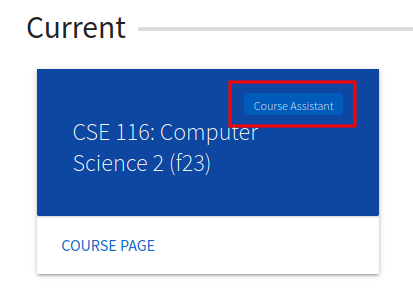
Students will not see a badge:
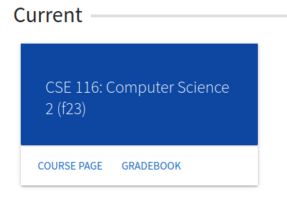
Course Page
Navigate to your course page, and you'll see the empty course dashboard.
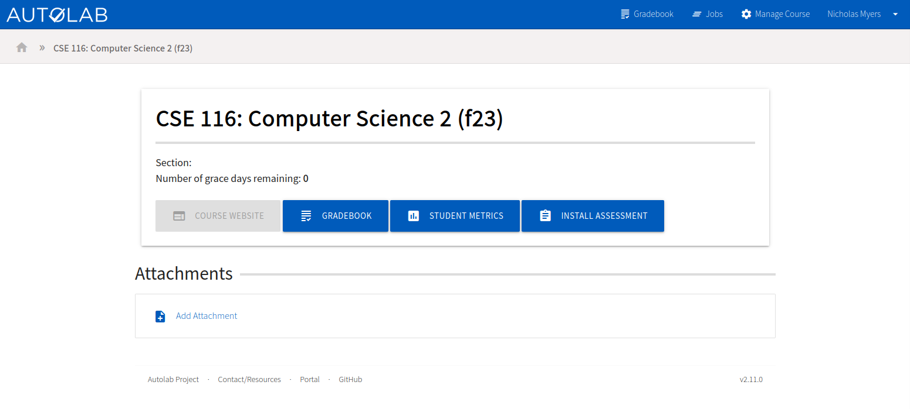
Manage Course
Let's start configuring the course. Click the Manage Course button on the navigation bar. Here's what you'll see:
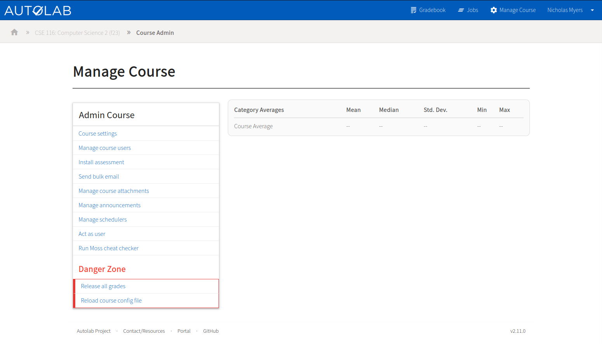
This will be referred to as the "Manage Course" page throughout the documentation.
Course Settings
From the manage course page, click Course settings to configure the general settings for the course. You can look
through all the options, but the default values are reasonable for most courses. Each option has hint text below it to
explain what it does.
The one thing I'd recommend doing now is adding your course homepage URL to the "Website" field. This will enable the "Course Website" button on the course dashboard.
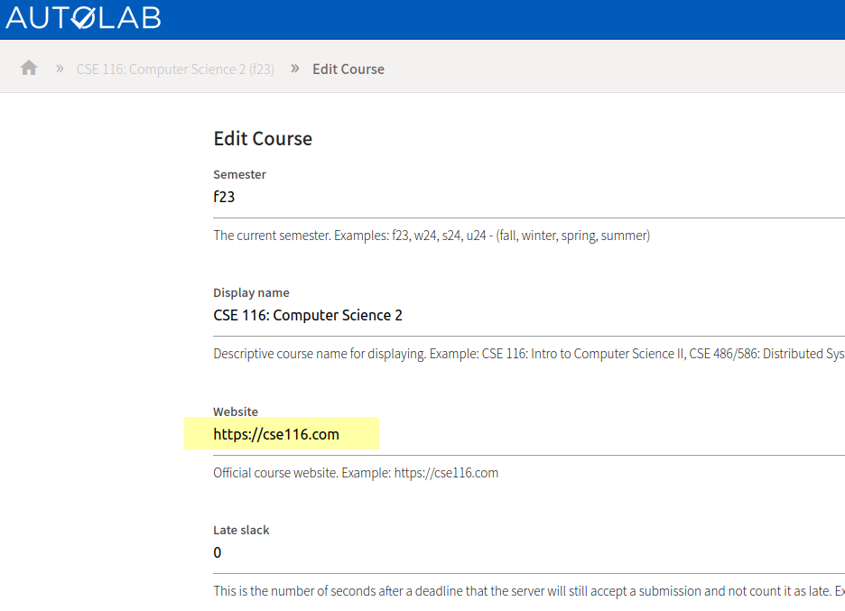
When you're done tweaking the settings, click Save at the bottom of the page. I won't keep mentioning this throughout
the documentation, but note that you'll need to click Save on most pages to save your changes.
Enrolling Students
From the manage course page, click Manage course uesrs. You'll see a list of all the users enrolled in the course.
This will initially just be you and some CSE IT staff members.
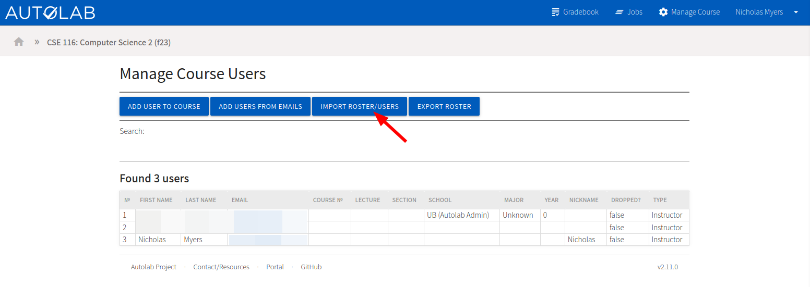
Click Import Roster/Users to import a roster of students. You'll see a page with instructions for formatting a CSV to
import, but CSE IT already has a tool that will build this CSV file for you. I'll walk through using that.
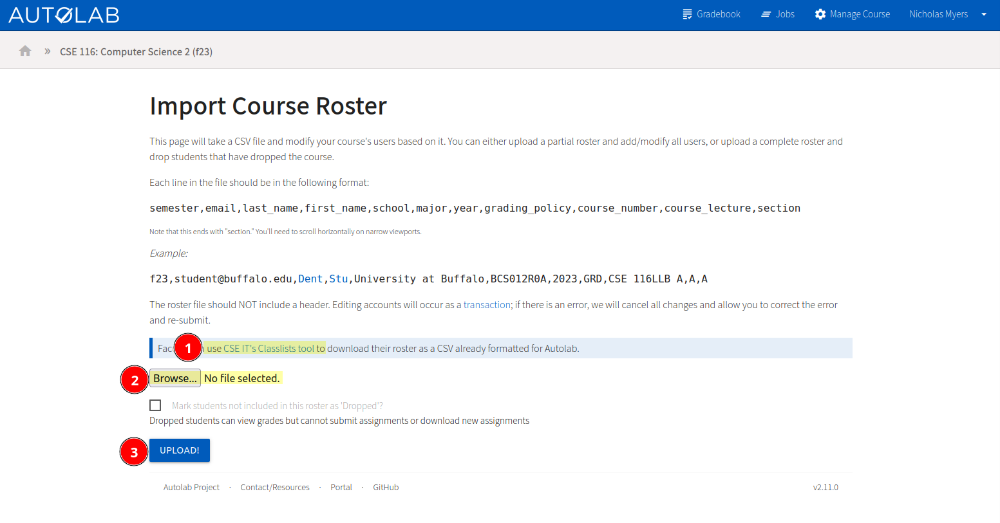
Using the CSE IT Classlists Tool
(Using this tool is not required. You can manually create a roster CSV file by following the format on the import page.)
Click the CSE IT's Classlists tool link on the page. Note that only CSE faculty and staff can access this tool.
- Select the term
- Choose to either only show your classes or all classes. You may need to show all classes if you and another instructor are co-teaching a course.
- Click next
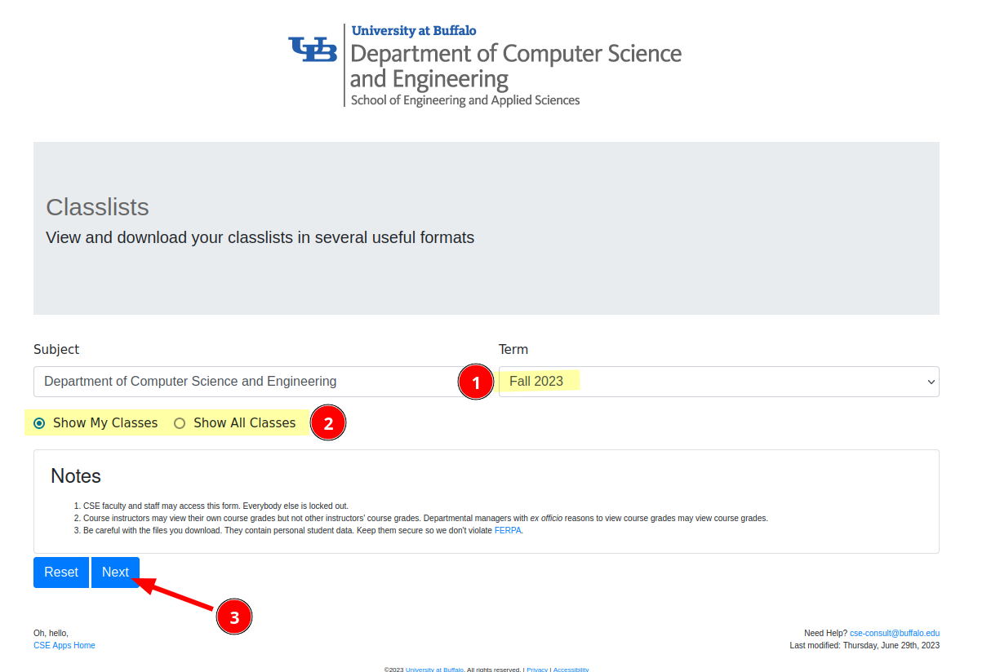
Select the course you want the roster for, then scroll down and click Next.
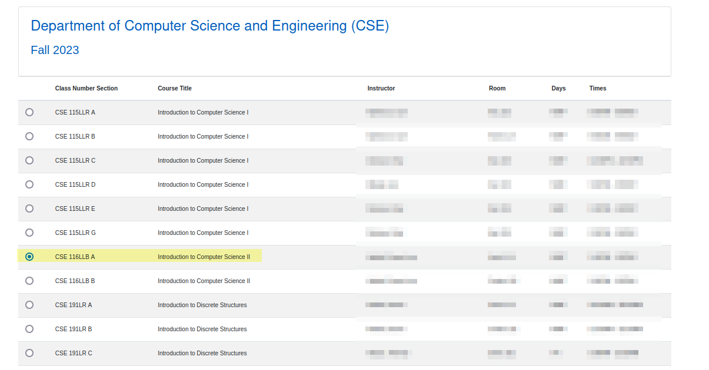
- Select the "AutoGrader Inputs" tab
- Click the blue button, which includes all sections of the course, to download the CSV file.

Go back to the Classlists tool and repeat the steps to download a CSV for each main section of the course.
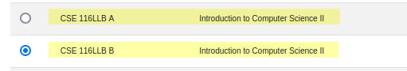
Uploading a CSV file
Unfortunately, we can only upload one CSV file at a time, so this process will need to be repeated for each CSV file.
Once you've downloaded or otherwise obtained a CSV file, go back to the Autolab import page and click the Browse
button, and then the Upload button to upload the CSV files.
Review the changes that will be made, and then click Confirm if the data looks correct.
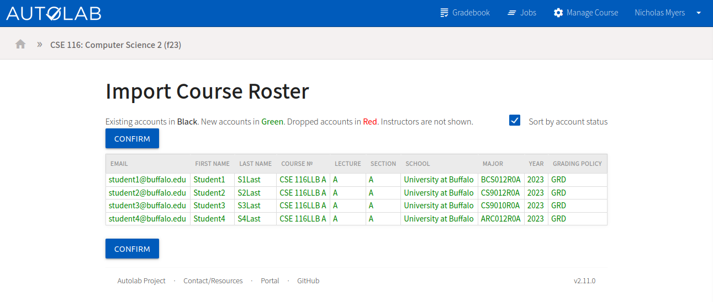
Now you'll see the full roster with the new students added.
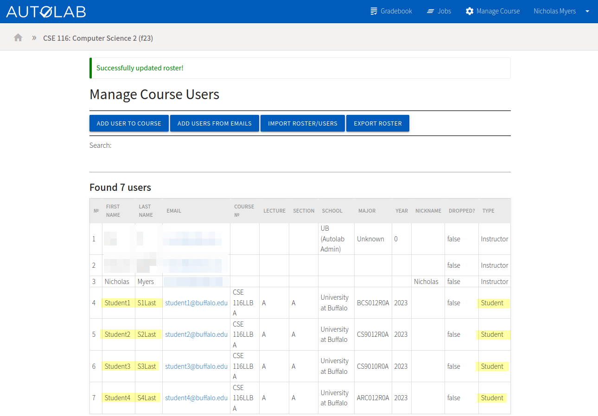
Enrolling Teaching Assistants
Navigate to the "Manage Course Users" page.
- Click
Add Users from Emails. - Enter the Buffalo email addresses of the TAs you want to add, one per line.
- Choose either "Course Assistant" or "Instructor" for their role.
- Instructors have full access to the course, equivalent to yours (assuming you're the instructor who created this course).
- CAs can only assign scores to problems.
- Click
Submit.
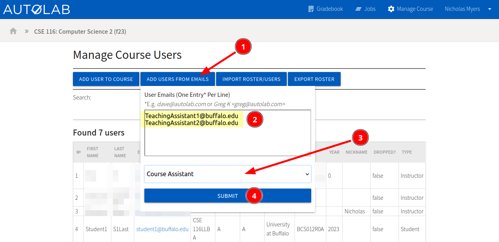
You'll see the TAs added to the roster.
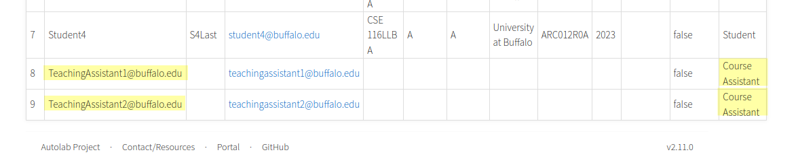
Side Note on Autolab Accounts
- In this example, the accounts don't really exist, so the names are incorrect/missing.
- If the TA already has an Autolab account, which is highly likely, the data will be correct.
- If the TA doesn't have an Autolab account, their information will automatically be updated when they sign in for the first time.
- The same applies to students if you create their accounts this way (without the CSV), but fields like the lecture and section won't be filled. It's highly recommended to enroll students with the CSV import feature.
Additional Course Management Features
From the manage course page, you can notably also:
- Manage course attachments to provide students with files
- Manage announcements to show students a short message on the course dashboard
- Act as another user to see what the course looks like from their perspective
- Run Moss cheat detection to look for similar code submissions between students
What's Next?
Now that you've created a course and enrolled students, you'll probably want to Create an Assessment.